<title>Classics in Modern English</title>
<meta name="claude:viewport-fit-sides" content="cover">
<meta name="robots" content="noindex">
<link rel="stylesheet" href="https://fonts.googleapis.com/css2?family=Playfair+Display:wght@600&family=EB+Garamond:ital,wght@0,400;0,500;1,400&display=swap">
<style>
/* Layout: one reading column for the pitch, a wide shelf grid below; phone first. Tinct tokens (docs/design-system.md). */
:root {
  --paper: #ece7db; --surface: #e2d8c4; --card: #f4efe4; --ink: #0b0b0b; --muted: #5f574b; --faint: #7a7163;
  --line: #cfc6b3; --accent: #1f4a5c; --accent-ink: #f4efe4;
  --display: 'Playfair Display', Georgia, serif;
  --book: 'EB Garamond', Georgia, 'Times New Roman', serif;
  --ui: -apple-system, BlinkMacSystemFont, 'Segoe UI', system-ui, sans-serif;
}
@media (prefers-color-scheme: dark) { :root:not([data-theme="light"]) {
  --paper: #171411; --surface: #211d18; --card: #1d1915; --ink: #e4dccf; --muted: #a99f92; --faint: #8f857a;
  --line: #3f382f; --accent: #8fbccd; --accent-ink: #12100d; color-scheme: dark } }
:root[data-theme="dark"] {
  --paper: #171411; --surface: #211d18; --card: #1d1915; --ink: #e4dccf; --muted: #a99f92; --faint: #8f857a;
  --line: #3f382f; --accent: #8fbccd; --accent-ink: #12100d; color-scheme: dark }
* { box-sizing: border-box }
body { background: var(--paper); color: var(--ink); font: 16px/1.5 var(--ui); -webkit-font-smoothing: antialiased }
a { color: inherit }
.wrap { max-width: 1080px; margin: 0 auto; padding-left: max(16px, env(safe-area-inset-left, 0px)); padding-right: max(16px, env(safe-area-inset-right, 0px)) }
header.top .wrap { display: flex; align-items: center; justify-content: space-between; padding-block: 14px }
.logo { font: 28px var(--book); text-decoration: none } .logo span { color: #c8942e }
.top-link { font: 500 14px var(--ui); text-decoration: none; padding: 8px 14px; border-radius: 18px; box-shadow: inset 0 0 0 1px var(--line) }
.hero { padding-block: 28px 8px }
h1 { font: 600 clamp(32px, 6.4vw, 56px)/1.08 var(--display); margin: 0; text-wrap: balance; max-width: 20ch }
.lede { font: clamp(19px, 2.4vw, 22px)/1.45 var(--book); color: var(--muted); margin: 14px 0 0; max-width: 36ch }
.facts { display: flex; flex-wrap: wrap; gap: 8px 18px; margin: 16px 0 0; padding: 0; list-style: none; font: 14px var(--ui); color: var(--muted) }
.facts li::before { content: ''; display: inline-block; width: 6px; height: 6px; border-radius: 3px; background: var(--accent); margin-right: 8px; vertical-align: 2px }
.search { margin-top: 22px; position: relative; max-width: 520px }
.search input { width: 100%; height: 48px; border-radius: 24px; border: 0; padding: 0 18px 0 44px; font: 16px var(--ui); color: var(--ink); background: var(--card); box-shadow: inset 0 0 0 1px var(--line) }
.search input:focus { outline: 2px solid var(--accent); outline-offset: 1px }
.search svg { position: absolute; left: 16px; top: 15px; color: var(--faint) }
h2 { font: 600 13px var(--ui); color: var(--muted); margin: 0 0 12px; letter-spacing: 0.02em }
.block { padding-block: 28px 0 }
.picks { list-style: none; margin: 0; padding: 0 0 6px; display: grid; grid-auto-flow: column; grid-auto-columns: 132px; gap: 14px; overflow-x: auto; scroll-snap-type: x mandatory }
.pick { display: flex; flex-direction: column; gap: 4px; text-decoration: none; scroll-snap-align: start }
.pick img { width: 132px; height: 198px; object-fit: cover; border-radius: 4px; box-shadow: 0 6px 16px rgba(0,0,0,0.18); background: var(--surface) }
.pick-title { font: 500 18px/1.2 var(--book); margin-top: 6px }
.pick-author { font: 13px var(--ui); color: var(--muted) }
.pick-line { font: 15px/1.35 var(--book); color: var(--muted) }
.pick:hover .pick-title, .row a:hover .row-title { color: var(--accent) }
.pick:focus-visible, .row a:focus-visible { outline: 2px solid var(--accent); outline-offset: 4px; border-radius: 6px }
.specimen { display: grid; grid-template-columns: 1fr; gap: 12px; background: var(--card); border-radius: 14px; padding: 18px; box-shadow: inset 0 0 0 1px var(--line) }
.specimen figure { margin: 0; min-width: 0 }
.specimen figcaption { font: 13px var(--ui); color: var(--muted); margin-bottom: 6px }
.specimen blockquote { margin: 0; font: 19px/1.5 var(--book) }
.specimen .old blockquote { color: var(--muted) }
.specimen-foot { font: 13px var(--ui); color: var(--muted); grid-column: 1 / -1; border-top: 1px solid var(--line); padding-top: 10px }
.houses { display: grid; grid-template-columns: 1fr; gap: 28px }
.house h3 { font: 600 16px var(--ui); margin: 0 0 6px; padding-bottom: 8px; border-bottom: 1px solid var(--line) }
.count { font-weight: 400; color: var(--faint); font-variant-numeric: tabular-nums }
.rows { list-style: none; margin: 0; padding: 0 }
.row a { display: flex; gap: 12px; align-items: center; padding: 8px 0; text-decoration: none; border-bottom: 1px solid var(--line) }
.row img { flex: none; width: 44px; height: 66px; object-fit: cover; border-radius: 3px; background: var(--surface) }
.row-text { display: flex; flex-direction: column; min-width: 0 }
.row-title { font: 500 18px/1.25 var(--book) }
.row-meta { font: 13px var(--ui); color: var(--muted) }
.row-src { font: 13px var(--ui); color: var(--faint) }
.empty { font: 17px var(--book); color: var(--muted) }
.how { display: grid; gap: 14px; margin: 0; padding: 0; list-style: none }
.how li { font: 18px/1.45 var(--book); max-width: 62ch }
.how strong { font-weight: 500 }
.close { margin-top: 40px; background: var(--accent); color: var(--accent-ink); border-radius: 16px; padding: 26px 22px; display: flex; flex-wrap: wrap; gap: 14px 24px; align-items: center; justify-content: space-between }
.close p { margin: 0; font: 600 clamp(24px, 4vw, 32px)/1.15 var(--display) }
.close a { font: 600 15px var(--ui); text-decoration: none; background: var(--accent-ink); color: var(--accent); padding: 12px 18px; border-radius: 22px }
footer { padding-block: 28px 36px; font: 14px var(--ui); color: var(--muted) }
footer .wrap { display: flex; flex-wrap: wrap; gap: 8px 20px }
@media (min-width: 760px) {
  .hero { padding-block: 56px 8px }
  .picks { grid-auto-flow: row; grid-template-columns: repeat(6, minmax(0, 1fr)); grid-auto-columns: auto; overflow: visible }
  .pick img { width: 100%; height: auto; aspect-ratio: 2 / 3 }
  .specimen { grid-template-columns: 1fr 1fr; gap: 24px; padding: 24px }
  .houses { grid-template-columns: 1fr 1fr; gap: 36px 40px }
}
@media (prefers-reduced-motion: no-preference) { .pick img { transition: transform .2s } .pick:hover img { transform: translateY(-3px) } }
</style>

<header class="top"><div class="wrap">
  <a class="logo" href="https://tinct.app/">Tinct<span>.</span></a>
  <a class="top-link" href="https://tinct.app/try">How Tinct works</a>
</div></header>

<main>
<div class="wrap hero">
  <h1>The classics, in plain modern English. Free.</h1>
  <p class="lede">Every page rewritten in today’s English with AI, with the original text one tap away.</p>
  <ul class="facts"><li>103 books</li><li>No sign-up to read</li><li>Original beside every page</li></ul>
  <form class="search" role="search" onsubmit="return false">
    <label for="q" class="sr" style="position:absolute;left:-9999px">Find a book</label>
    <svg aria-hidden="true" width="18" height="18" viewBox="0 0 24 24" fill="none" stroke="currentColor" stroke-width="1.8" stroke-linecap="round"><circle cx="11" cy="11" r="7"/><path d="M20 20l-3.5-3.5"/></svg>
    <input id="q" type="search" placeholder="Find a book or author" autocomplete="off">
  </form>
</div>

<div class="wrap block" id="start">
  <h2>Start here</h2>
  <ul class="picks"><li><a class="pick" href="https://tinct.app/read/hamlet?ref=modern-english"><span class="pick-title">Hamlet</span><span class="pick-author">William Shakespeare</span><span class="pick-line">Shakespeare’s English, scene by scene in today’s words.</span></a></li><li><a class="pick" href="https://tinct.app/read/meditations?ref=modern-english"><span class="pick-title">Meditations</span><span class="pick-author">Marcus Aurelius</span><span class="pick-line">A Roman emperor’s notes to himself, in plain sentences.</span></a></li><li><a class="pick" href="https://tinct.app/read/pride-and-prejudice?ref=modern-english"><span class="pick-title">Pride and Prejudice</span><span class="pick-author">Jane Austen</span><span class="pick-line">Austen’s long sentences, easy to follow.</span></a></li><li><a class="pick" href="https://tinct.app/read/crime-and-punishment?ref=modern-english"><span class="pick-title">Crime and Punishment</span><span class="pick-author">Fyodor Dostoevsky</span><span class="pick-line">Dostoevsky without the 1914 phrasing.</span></a></li><li><a class="pick" href="https://tinct.app/read/odyssey?ref=modern-english"><span class="pick-title">The Odyssey</span><span class="pick-author">Homer</span><span class="pick-line">Homer’s journey home, as a story you can simply read.</span></a></li><li><a class="pick" href="https://tinct.app/read/frankenstein?ref=modern-english"><span class="pick-title">Frankenstein</span><span class="pick-author">Mary Shelley</span><span class="pick-line">The 1831 novel in today’s English.</span></a></li></ul>
</div>

<div class="wrap block">
  <h2>The same page, two ways</h2>
  <div class="specimen">
    <figure class="old"><figcaption>Meditations, Book 2 · George Long’s 1862 translation</figcaption><blockquote>Begin the morning by saying to thyself, I shall meet with the busybody, the ungrateful, arrogant, deceitful, envious, unsocial. All these things happen to them by reason of their ignorance of what is good and evil.</blockquote></figure>
    <figure><figcaption>Modern English, made with AI</figcaption><blockquote>Begin each morning by telling yourself: today I shall meet people who are meddling, ungrateful, arrogant, deceitful, envious, and careless of others. They are like this because they do not know what is good and what is bad.</blockquote></figure>
    <p class="specimen-foot">In the reader you switch between the two at the same line. On a computer you can read them side by side.</p>
  </div>
</div>

<div class="wrap block" id="all">
  <h2>All 103 books</h2>
  <div class="houses"><section class="house" data-house><h3>Novels and stories <span class="count">32</span></h3><ul class="rows"><li class="row" data-q="don quixote miguel de cervantes"><a href="https://tinct.app/read/don-quixote?ref=modern-english"><span class="row-text"><span class="row-title">Don Quixote</span><span class="row-meta">Miguel de Cervantes · 31 h</span><span class="row-src">Modern English, from John Ormsby’s 1885 translation</span></span></a></li><li class="row" data-q="candide voltaire"><a href="https://tinct.app/read/candide?ref=modern-english">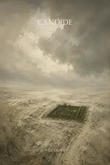<span class="row-text"><span class="row-title">Candide</span><span class="row-meta">Voltaire · 2 h</span><span class="row-src">Modern English, from William F. Fleming’s 1901 translation</span></span></a></li><li class="row" data-q="the sorrows of young werther johann wolfgang von goethe"><a href="https://tinct.app/read/werther?ref=modern-english"><span class="row-text"><span class="row-title">The Sorrows of Young Werther</span><span class="row-meta">Johann Wolfgang von Goethe · 3 h</span><span class="row-src">Modern English, from R. D. Boylan’s 1779 translation</span></span></a></li><li class="row" data-q="sense and sensibility jane austen"><a href="https://tinct.app/read/sense-and-sensibility?ref=modern-english">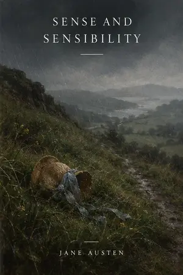<span class="row-text"><span class="row-title">Sense and Sensibility</span><span class="row-meta">Jane Austen · 9 h</span><span class="row-src">Modern English, from the original English</span></span></a></li><li class="row" data-q="grimms’ fairy tales jacob and wilhelm grimm"><a href="https://tinct.app/read/grimms-fairy-tales?ref=modern-english"><span class="row-text"><span class="row-title">Grimms’ Fairy Tales</span><span class="row-meta">Jacob and Wilhelm Grimm · 7 h</span><span class="row-src">Modern English, from Edgar Taylor and Marian Edwardes’s translation</span></span></a></li><li class="row" data-q="pride and prejudice jane austen"><a href="https://tinct.app/read/pride-and-prejudice?ref=modern-english"><span class="row-text"><span class="row-title">Pride and Prejudice</span><span class="row-meta">Jane Austen · 9 h</span><span class="row-src">Modern English, from the original English</span></span></a></li><li class="row" data-q="frankenstein mary shelley"><a href="https://tinct.app/read/frankenstein?ref=modern-english"><span class="row-text"><span class="row-title">Frankenstein</span><span class="row-meta">Mary Shelley · 5 h</span><span class="row-src">Modern English, from the original English</span></span></a></li><li class="row" data-q="jane eyre charlotte brontë"><a href="https://tinct.app/read/jane-eyre?ref=modern-english">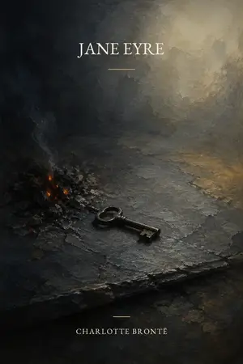<span class="row-text"><span class="row-title">Jane Eyre</span><span class="row-meta">Charlotte Brontë · 14 h</span><span class="row-src">Modern English, from the original English</span></span></a></li><li class="row" data-q="wuthering heights emily brontë"><a href="https://tinct.app/read/wuthering-heights?ref=modern-english"><span class="row-text"><span class="row-title">Wuthering Heights</span><span class="row-meta">Emily Brontë · 8 h</span><span class="row-src">Modern English, from the original English</span></span></a></li><li class="row" data-q="moby dick herman melville"><a href="https://tinct.app/read/moby-dick?ref=modern-english"><span class="row-text"><span class="row-title">Moby Dick</span><span class="row-meta">Herman Melville · 15 h</span><span class="row-src">Modern English, from the original English</span></span></a></li><li class="row" data-q="great expectations charles dickens"><a href="https://tinct.app/read/great-expectations?ref=modern-english">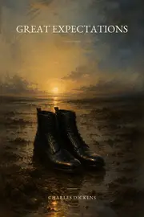<span class="row-text"><span class="row-title">Great Expectations</span><span class="row-meta">Charles Dickens · 13 h</span><span class="row-src">Modern English, from the original English</span></span></a></li><li class="row" data-q="notes from underground fyodor dostoevsky"><a href="https://tinct.app/read/notes-from-underground?ref=modern-english"><span class="row-text"><span class="row-title">Notes from Underground</span><span class="row-meta">Fyodor Dostoevsky · 3 h</span><span class="row-src">Modern English, from Constance Garnett’s 1918 translation</span></span></a></li><li class="row" data-q="alice&#x27;s adventures in wonderland lewis carroll"><a href="https://tinct.app/read/alice-in-wonderland?ref=modern-english"><span class="row-text"><span class="row-title">Alice&#x27;s Adventures in Wonderland</span><span class="row-meta">Lewis Carroll · 2 h</span><span class="row-src">Modern English, from the original English</span></span></a></li><li class="row" data-q="crime and punishment fyodor dostoevsky"><a href="https://tinct.app/read/crime-and-punishment?ref=modern-english"><span class="row-text"><span class="row-title">Crime and Punishment</span><span class="row-meta">Fyodor Dostoevsky · 15 h</span><span class="row-src">Modern English, from Constance Garnett’s 1914 translation</span></span></a></li><li class="row" data-q="war and peace leo tolstoy"><a href="https://tinct.app/read/war-and-peace?ref=modern-english"><span class="row-text"><span class="row-title">War and Peace</span><span class="row-meta">Leo Tolstoy · 41 h</span><span class="row-src">Modern English, from Aylmer & Louise Maude’s 1922 translation</span></span></a></li><li class="row" data-q="middlemarch george eliot"><a href="https://tinct.app/read/middlemarch?ref=modern-english"><span class="row-text"><span class="row-title">Middlemarch</span><span class="row-meta">George Eliot · 23 h</span><span class="row-src">Modern English, from the original English</span></span></a></li><li class="row" data-q="around the world in eighty days jules verne"><a href="https://tinct.app/read/around-the-world-80-days?ref=modern-english"><span class="row-text"><span class="row-title">Around the World in Eighty Days</span><span class="row-meta">Jules Verne · 5 h</span><span class="row-src">Modern English, from George Towle’s 1873 translation</span></span></a></li><li class="row" data-q="anna karenina leo tolstoy"><a href="https://tinct.app/read/anna-karenina?ref=modern-english"><span class="row-text"><span class="row-title">Anna Karenina</span><span class="row-meta">Leo Tolstoy · 25 h</span><span class="row-src">Modern English, from Constance Garnett’s 1901 translation</span></span></a></li><li class="row" data-q="the brothers karamazov fyodor dostoevsky"><a href="https://tinct.app/read/brothers-karamazov?ref=modern-english"><span class="row-text"><span class="row-title">The Brothers Karamazov</span><span class="row-meta">Fyodor Dostoevsky · 26 h</span><span class="row-src">Modern English, from Constance Garnett’s 1912 translation</span></span></a></li><li class="row" data-q="niels lyhne j.p. jacobsen"><a href="https://tinct.app/read/niels-lyhne?ref=modern-english"><span class="row-text"><span class="row-title">Niels Lyhne</span><span class="row-meta">J.P. Jacobsen · 5 h</span><span class="row-src">Modern English, from Hanna Astrup Larsen’s 1919 translation</span></span></a></li><li class="row" data-q="the adventures of pinocchio carlo collodi"><a href="https://tinct.app/read/pinocchio?ref=modern-english">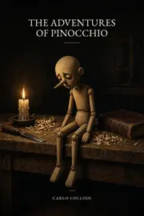<span class="row-text"><span class="row-title">The Adventures of Pinocchio</span><span class="row-meta">Carlo Collodi · 3 h</span><span class="row-src">Modern English, from the original English</span></span></a></li><li class="row" data-q="strange case of dr jekyll and mr hyde robert louis stevenson"><a href="https://tinct.app/read/jekyll-and-hyde?ref=modern-english"><span class="row-text"><span class="row-title">Strange Case of Dr Jekyll and Mr Hyde</span><span class="row-meta">Robert Louis Stevenson · 2 h</span><span class="row-src">Modern English, from the original English</span></span></a></li><li class="row" data-q="the death of ivan ilyich leo tolstoy"><a href="https://tinct.app/read/ivan-ilyich?ref=modern-english"><span class="row-text"><span class="row-title">The Death of Ivan Ilyich</span><span class="row-meta">Leo Tolstoy · 1 h</span><span class="row-src">Modern English, from Louise & Aylmer Maude’s translation</span></span></a></li><li class="row" data-q="the jungle book rudyard kipling"><a href="https://tinct.app/read/jungle-book?ref=modern-english">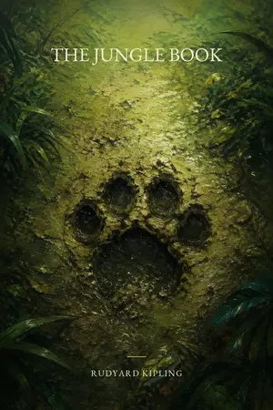<span class="row-text"><span class="row-title">The Jungle Book</span><span class="row-meta">Rudyard Kipling · 4 h</span><span class="row-src">Modern English, from the original English</span></span></a></li><li class="row" data-q="the arabian nights entertainments andrew lang"><a href="https://tinct.app/read/arabian-nights?ref=modern-english">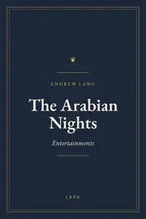<span class="row-text"><span class="row-title">The Arabian Nights Entertainments</span><span class="row-meta">Andrew Lang · 8 h</span><span class="row-src">Modern English, from the original English</span></span></a></li><li class="row" data-q="the awakening kate chopin"><a href="https://tinct.app/read/the-awakening?ref=modern-english">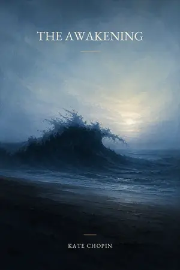<span class="row-text"><span class="row-title">The Awakening</span><span class="row-meta">Kate Chopin · 4 h</span><span class="row-src">Modern English, from the original English</span></span></a></li><li class="row" data-q="heart of darkness joseph conrad"><a href="https://tinct.app/read/heart-of-darkness?ref=modern-english">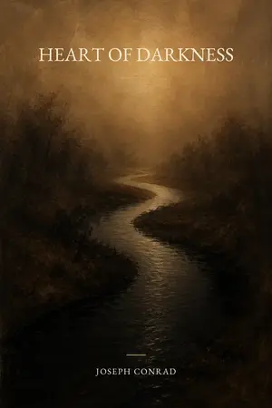<span class="row-text"><span class="row-title">Heart of Darkness</span><span class="row-meta">Joseph Conrad · 3 h</span><span class="row-src">Modern English, from the original English</span></span></a></li><li class="row" data-q="jerusalem selma lagerlöf"><a href="https://tinct.app/read/jerusalem?ref=modern-english"><span class="row-text"><span class="row-title">Jerusalem</span><span class="row-meta">Selma Lagerlöf · 7 h</span><span class="row-src">Modern English, from Velma Swanston Howard’s 1915 translation</span></span></a></li><li class="row" data-q="a little princess frances hodgson burnett"><a href="https://tinct.app/read/a-little-princess?ref=modern-english"><span class="row-text"><span class="row-title">A Little Princess</span><span class="row-meta">Frances Hodgson Burnett · 5 h</span><span class="row-src">Modern English, from the original English</span></span></a></li><li class="row" data-q="ulysses james joyce"><a href="https://tinct.app/read/ulysses?ref=modern-english"><span class="row-text"><span class="row-title">Ulysses</span><span class="row-meta">James Joyce · 19 h</span><span class="row-src">Modern English, from the original English</span></span></a></li><li class="row" data-q="to the lighthouse virginia woolf"><a href="https://tinct.app/read/to-the-lighthouse?ref=modern-english"><span class="row-text"><span class="row-title">To the Lighthouse</span><span class="row-meta">Virginia Woolf · 5 h</span><span class="row-src">Modern English, from the original English</span></span></a></li><li class="row" data-q="the master and margarita mikhail bulgakov"><a href="https://tinct.app/read/master-and-margarita?ref=modern-english"><span class="row-text"><span class="row-title">The Master and Margarita</span><span class="row-meta">Mikhail Bulgakov · 11 h</span><span class="row-src">Modern English, from the original English</span></span></a></li></ul></section><section class="house" data-house><h3>Drama <span class="count">30</span></h3><ul class="rows"><li class="row" data-q="the oresteia aeschylus"><a href="https://tinct.app/read/oresteia?ref=modern-english"><span class="row-text"><span class="row-title">The Oresteia</span><span class="row-meta">Aeschylus · 2 h</span><span class="row-src">Modern English, from E. D. A. Morshead’s 1881 translation</span></span></a></li><li class="row" data-q="antigone sophocles"><a href="https://tinct.app/read/antigone?ref=modern-english"><span class="row-text"><span class="row-title">Antigone</span><span class="row-meta">Sophocles · 1 h</span><span class="row-src">Modern English, from Francis Storr’s 1912 translation</span></span></a></li><li class="row" data-q="medea euripides"><a href="https://tinct.app/read/medea?ref=modern-english">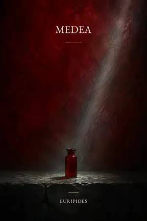<span class="row-text"><span class="row-title">Medea</span><span class="row-meta">Euripides · 48 min</span><span class="row-src">Modern English, from Arthur S. Way’s 1894 translation</span></span></a></li><li class="row" data-q="oedipus rex sophocles"><a href="https://tinct.app/read/oedipus-rex?ref=modern-english"><span class="row-text"><span class="row-title">Oedipus Rex</span><span class="row-meta">Sophocles · 1 h</span><span class="row-src">Modern English, from Francis Storr’s 1912 translation</span></span></a></li><li class="row" data-q="oedipus at colonus sophocles"><a href="https://tinct.app/read/oedipus-at-colonus?ref=modern-english">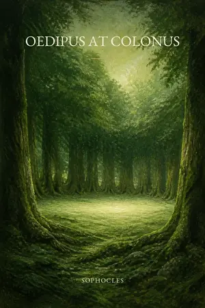<span class="row-text"><span class="row-title">Oedipus at Colonus</span><span class="row-meta">Sophocles · 1 h</span><span class="row-src">Modern English, from Francis Storr’s 1912 translation</span></span></a></li><li class="row" data-q="the bacchae euripides"><a href="https://tinct.app/read/bacchae?ref=modern-english"><span class="row-text"><span class="row-title">The Bacchae</span><span class="row-meta">Euripides · 59 min</span><span class="row-src">Modern English, from Arthur S. Way’s 1898 translation</span></span></a></li><li class="row" data-q="the taming of the shrew william shakespeare"><a href="https://tinct.app/read/taming-of-the-shrew?ref=modern-english"><span class="row-text"><span class="row-title">The Taming of the Shrew</span><span class="row-meta">William Shakespeare · 2 h</span><span class="row-src">Modern English, from the original English</span></span></a></li><li class="row" data-q="richard iii william shakespeare"><a href="https://tinct.app/read/richard-iii?ref=modern-english"><span class="row-text"><span class="row-title">Richard III</span><span class="row-meta">William Shakespeare · 2 h</span><span class="row-src">Modern English, from the original English</span></span></a></li><li class="row" data-q="the comedy of errors william shakespeare"><a href="https://tinct.app/read/comedy-of-errors?ref=modern-english"><span class="row-text"><span class="row-title">The Comedy of Errors</span><span class="row-meta">William Shakespeare · 1 h</span><span class="row-src">Modern English, from the original English</span></span></a></li><li class="row" data-q="a midsummer night&#x27;s dream william shakespeare"><a href="https://tinct.app/read/midsummer?ref=modern-english">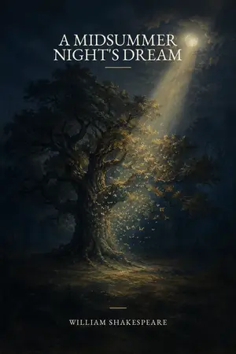<span class="row-text"><span class="row-title">A Midsummer Night&#x27;s Dream</span><span class="row-meta">William Shakespeare · 1 h</span><span class="row-src">Modern English, from the original English</span></span></a></li><li class="row" data-q="romeo and juliet william shakespeare"><a href="https://tinct.app/read/romeo-and-juliet?ref=modern-english"><span class="row-text"><span class="row-title">Romeo and Juliet</span><span class="row-meta">William Shakespeare · 2 h</span><span class="row-src">Modern English, from the original English</span></span></a></li><li class="row" data-q="the merchant of venice william shakespeare"><a href="https://tinct.app/read/merchant-of-venice?ref=modern-english"><span class="row-text"><span class="row-title">The Merchant of Venice</span><span class="row-meta">William Shakespeare · 2 h</span><span class="row-src">Modern English, from the original English</span></span></a></li><li class="row" data-q="much ado about nothing william shakespeare"><a href="https://tinct.app/read/much-ado-about-nothing?ref=modern-english"><span class="row-text"><span class="row-title">Much Ado About Nothing</span><span class="row-meta">William Shakespeare · 2 h</span><span class="row-src">Modern English, from the original English</span></span></a></li><li class="row" data-q="henry v william shakespeare"><a href="https://tinct.app/read/henry-v?ref=modern-english"><span class="row-text"><span class="row-title">Henry V</span><span class="row-meta">William Shakespeare · 2 h</span><span class="row-src">Modern English, from the original English</span></span></a></li><li class="row" data-q="julius caesar william shakespeare"><a href="https://tinct.app/read/julius-caesar?ref=modern-english"><span class="row-text"><span class="row-title">Julius Caesar</span><span class="row-meta">William Shakespeare · 2 h</span><span class="row-src">Modern English, from the original English</span></span></a></li><li class="row" data-q="as you like it william shakespeare"><a href="https://tinct.app/read/as-you-like-it?ref=modern-english"><span class="row-text"><span class="row-title">As You Like It</span><span class="row-meta">William Shakespeare · 2 h</span><span class="row-src">Modern English, from the original English</span></span></a></li><li class="row" data-q="henry iv, part 2 william shakespeare"><a href="https://tinct.app/read/henry-iv-part-2?ref=modern-english"><span class="row-text"><span class="row-title">Henry IV, Part 2</span><span class="row-meta">William Shakespeare · 2 h</span><span class="row-src">Modern English, from the original English</span></span></a></li><li class="row" data-q="hamlet william shakespeare"><a href="https://tinct.app/read/hamlet?ref=modern-english"><span class="row-text"><span class="row-title">Hamlet</span><span class="row-meta">William Shakespeare · 2 h</span><span class="row-src">Modern English, from the original English</span></span></a></li><li class="row" data-q="twelfth night william shakespeare"><a href="https://tinct.app/read/twelfth-night?ref=modern-english"><span class="row-text"><span class="row-title">Twelfth Night</span><span class="row-meta">William Shakespeare · 2 h</span><span class="row-src">Modern English, from the original English</span></span></a></li><li class="row" data-q="the merry wives of windsor william shakespeare"><a href="https://tinct.app/read/merry-wives-of-windsor?ref=modern-english"><span class="row-text"><span class="row-title">The Merry Wives of Windsor</span><span class="row-meta">William Shakespeare · 2 h</span><span class="row-src">Modern English, from the original English</span></span></a></li><li class="row" data-q="othello william shakespeare"><a href="https://tinct.app/read/othello?ref=modern-english">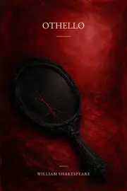<span class="row-text"><span class="row-title">Othello</span><span class="row-meta">William Shakespeare · 2 h</span><span class="row-src">Modern English, from the original English</span></span></a></li><li class="row" data-q="measure for measure william shakespeare"><a href="https://tinct.app/read/measure-for-measure?ref=modern-english"><span class="row-text"><span class="row-title">Measure for Measure</span><span class="row-meta">William Shakespeare · 2 h</span><span class="row-src">Modern English, from the original English</span></span></a></li><li class="row" data-q="king lear william shakespeare"><a href="https://tinct.app/read/king-lear?ref=modern-english"><span class="row-text"><span class="row-title">King Lear</span><span class="row-meta">William Shakespeare · 2 h</span><span class="row-src">Modern English, from the original English</span></span></a></li><li class="row" data-q="macbeth william shakespeare"><a href="https://tinct.app/read/macbeth?ref=modern-english"><span class="row-text"><span class="row-title">Macbeth</span><span class="row-meta">William Shakespeare · 1 h</span><span class="row-src">Modern English, from the original English</span></span></a></li><li class="row" data-q="antony and cleopatra william shakespeare"><a href="https://tinct.app/read/antony-and-cleopatra?ref=modern-english"><span class="row-text"><span class="row-title">Antony and Cleopatra</span><span class="row-meta">William Shakespeare · 2 h</span><span class="row-src">Modern English, from the original English</span></span></a></li><li class="row" data-q="coriolanus william shakespeare"><a href="https://tinct.app/read/coriolanus?ref=modern-english">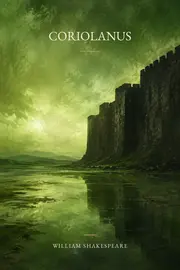<span class="row-text"><span class="row-title">Coriolanus</span><span class="row-meta">William Shakespeare · 2 h</span><span class="row-src">Modern English, from the original English</span></span></a></li><li class="row" data-q="the winter&#x27;s tale william shakespeare"><a href="https://tinct.app/read/winters-tale?ref=modern-english">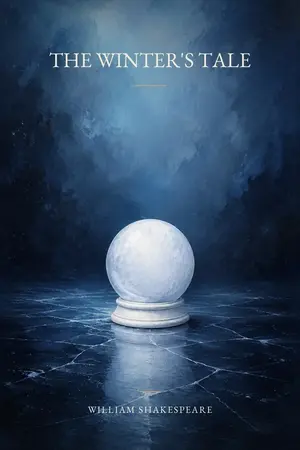<span class="row-text"><span class="row-title">The Winter&#x27;s Tale</span><span class="row-meta">William Shakespeare · 2 h</span><span class="row-src">Modern English, from the original English</span></span></a></li><li class="row" data-q="the tempest william shakespeare"><a href="https://tinct.app/read/the-tempest?ref=modern-english"><span class="row-text"><span class="row-title">The Tempest</span><span class="row-meta">William Shakespeare · 1 h</span><span class="row-src">Modern English, from the original English</span></span></a></li><li class="row" data-q="cymbeline william shakespeare"><a href="https://tinct.app/read/cymbeline?ref=modern-english">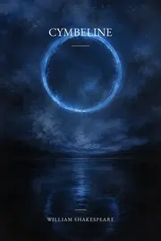<span class="row-text"><span class="row-title">Cymbeline</span><span class="row-meta">William Shakespeare · 2 h</span><span class="row-src">Modern English, from the original English</span></span></a></li><li class="row" data-q="faust, part one johann wolfgang von goethe"><a href="https://tinct.app/read/faust-part-1?ref=modern-english"><span class="row-text"><span class="row-title">Faust, Part One</span><span class="row-meta">Johann Wolfgang von Goethe · 2 h</span><span class="row-src">Modern English, from Bayard Taylor’s 1870 translation</span></span></a></li></ul></section><section class="house" data-house><h3>Poetry and epic <span class="count">6</span></h3><ul class="rows"><li class="row" data-q="the iliad homer"><a href="https://tinct.app/read/iliad?ref=modern-english"><span class="row-text"><span class="row-title">The Iliad</span><span class="row-meta">Homer · 11 h</span><span class="row-src">Modern English, from Samuel Butler’s 1898 translation</span></span></a></li><li class="row" data-q="the odyssey homer"><a href="https://tinct.app/read/odyssey?ref=modern-english"><span class="row-text"><span class="row-title">The Odyssey</span><span class="row-meta">Homer · 9 h</span><span class="row-src">Modern English, from Samuel Butler’s 1900 translation</span></span></a></li><li class="row" data-q="the aeneid virgil"><a href="https://tinct.app/read/the-aeneid?ref=modern-english">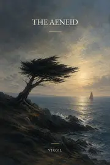<span class="row-text"><span class="row-title">The Aeneid</span><span class="row-meta">Virgil · 8 h</span><span class="row-src">Modern English, from John Dryden’s 1697 translation</span></span></a></li><li class="row" data-q="beowulf anonymous"><a href="https://tinct.app/read/beowulf?ref=modern-english"><span class="row-text"><span class="row-title">Beowulf</span><span class="row-meta">Anonymous · 2 h</span><span class="row-src">Modern English, from J. Lesslie Hall’s 1892 translation</span></span></a></li><li class="row" data-q="the divine comedy dante alighieri"><a href="https://tinct.app/read/divine-comedy?ref=modern-english"><span class="row-text"><span class="row-title">The Divine Comedy</span><span class="row-meta">Dante Alighieri · 8 h</span><span class="row-src">Modern English, from Henry Wadsworth Longfellow’s 1867 translation</span></span></a></li><li class="row" data-q="paradise lost john milton"><a href="https://tinct.app/read/paradise-lost?ref=modern-english"><span class="row-text"><span class="row-title">Paradise Lost</span><span class="row-meta">John Milton · 6 h</span><span class="row-src">Modern English, from the original English</span></span></a></li></ul></section><section class="house" data-house><h3>Philosophy <span class="count">21</span></h3><ul class="rows"><li class="row" data-q="apology plato"><a href="https://tinct.app/read/apology?ref=modern-english"><span class="row-text"><span class="row-title">Apology</span><span class="row-meta">Plato · 1 h</span><span class="row-src">Modern English, from Benjamin Jowett’s 1871 translation</span></span></a></li><li class="row" data-q="crito plato"><a href="https://tinct.app/read/crito?ref=modern-english"><span class="row-text"><span class="row-title">Crito</span><span class="row-meta">Plato · 33 min</span><span class="row-src">Modern English, from Benjamin Jowett’s 1871 translation</span></span></a></li><li class="row" data-q="phaedo plato"><a href="https://tinct.app/read/phaedo?ref=modern-english">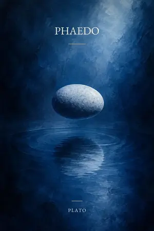<span class="row-text"><span class="row-title">Phaedo</span><span class="row-meta">Plato · 3 h</span><span class="row-src">Modern English, from Benjamin Jowett’s 1871 translation</span></span></a></li><li class="row" data-q="the republic plato"><a href="https://tinct.app/read/the-republic?ref=modern-english">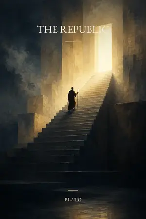<span class="row-text"><span class="row-title">The Republic</span><span class="row-meta">Plato · 9 h</span><span class="row-src">Modern English, from Benjamin Jowett’s 1871 translation</span></span></a></li><li class="row" data-q="phaedrus plato"><a href="https://tinct.app/read/phaedrus?ref=modern-english">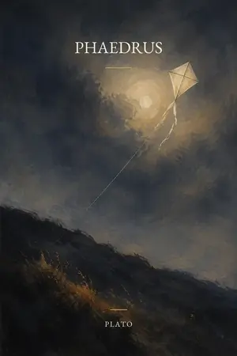<span class="row-text"><span class="row-title">Phaedrus</span><span class="row-meta">Plato · 2 h</span><span class="row-src">Modern English, from Benjamin Jowett’s 1871 translation</span></span></a></li><li class="row" data-q="nicomachean ethics aristotle"><a href="https://tinct.app/read/nicomachean-ethics?ref=modern-english"><span class="row-text"><span class="row-title">Nicomachean Ethics</span><span class="row-meta">Aristotle · 7 h</span><span class="row-src">Modern English, from D.P. Chase’s 1847 translation</span></span></a></li><li class="row" data-q="politics aristotle"><a href="https://tinct.app/read/aristotle-politics?ref=modern-english"><span class="row-text"><span class="row-title">Politics</span><span class="row-meta">Aristotle · 7 h</span><span class="row-src">Modern English, from Benjamin Jowett’s 1885 translation</span></span></a></li><li class="row" data-q="poetics aristotle"><a href="https://tinct.app/read/poetics?ref=modern-english">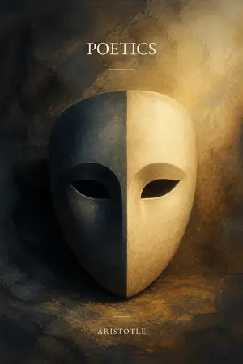<span class="row-text"><span class="row-title">Poetics</span><span class="row-meta">Aristotle · 1 h</span><span class="row-src">Modern English, from S. H. Butcher’s 1895 translation</span></span></a></li><li class="row" data-q="the manual epictetus"><a href="https://tinct.app/read/the-manual?ref=modern-english"><span class="row-text"><span class="row-title">The Manual</span><span class="row-meta">Epictetus · 43 min</span><span class="row-src">Modern English, from George Long’s 1877 translation</span></span></a></li><li class="row" data-q="meditations marcus aurelius"><a href="https://tinct.app/read/meditations?ref=modern-english"><span class="row-text"><span class="row-title">Meditations</span><span class="row-meta">Marcus Aurelius · 3 h</span><span class="row-src">Modern English, from George Long’s 1862 translation</span></span></a></li><li class="row" data-q="confessions augustine"><a href="https://tinct.app/read/confessions?ref=modern-english"><span class="row-text"><span class="row-title">Confessions</span><span class="row-meta">Augustine · 7 h</span><span class="row-src">Modern English, from Edward Bouverie Pusey’s 1838 translation</span></span></a></li><li class="row" data-q="the imitation of christ thomas à kempis"><a href="https://tinct.app/read/imitation-of-christ?ref=modern-english"><span class="row-text"><span class="row-title">The Imitation of Christ</span><span class="row-meta">Thomas à Kempis · 4 h</span><span class="row-src">Modern English, from the original English</span></span></a></li><li class="row" data-q="essays michel de montaigne"><a href="https://tinct.app/read/essays-montaigne?ref=modern-english">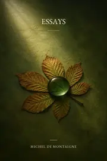<span class="row-text"><span class="row-title">Essays</span><span class="row-meta">Michel de Montaigne · 25 h</span><span class="row-src">Modern English, from Charles Cotton, ed. William Hazlitt’s 1877 translation</span></span></a></li><li class="row" data-q="meditations on first philosophy rené descartes"><a href="https://tinct.app/read/descartes-meditations?ref=modern-english"><span class="row-text"><span class="row-title">Meditations on First Philosophy</span><span class="row-meta">René Descartes · 2 h</span><span class="row-src">Modern English, from John Veitch’s 1901 translation</span></span></a></li><li class="row" data-q="an enquiry concerning human understanding david hume"><a href="https://tinct.app/read/hume-enquiry?ref=modern-english">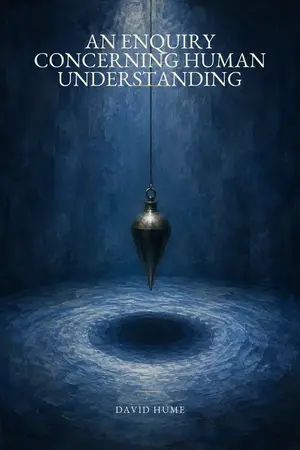<span class="row-text"><span class="row-title">An Enquiry Concerning Human Understanding</span><span class="row-meta">David Hume · 4 h</span><span class="row-src">Modern English, from the original English</span></span></a></li><li class="row" data-q="groundwork of the metaphysics of morals immanuel kant"><a href="https://tinct.app/read/kant-groundwork?ref=modern-english"><span class="row-text"><span class="row-title">Groundwork of the Metaphysics of Morals</span><span class="row-meta">Immanuel Kant · 2 h</span><span class="row-src">Modern English, from Thomas Kingsmill Abbott’s 1879 translation</span></span></a></li><li class="row" data-q="fear and trembling søren kierkegaard"><a href="https://tinct.app/read/fear-and-trembling?ref=modern-english">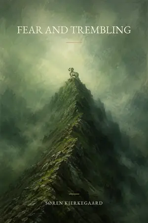<span class="row-text"><span class="row-title">Fear and Trembling</span><span class="row-meta">Søren Kierkegaard · 3 h</span><span class="row-src">Modern English, from the original English</span></span></a></li><li class="row" data-q="walden henry david thoreau"><a href="https://tinct.app/read/walden?ref=modern-english"><span class="row-text"><span class="row-title">Walden</span><span class="row-meta">Henry David Thoreau · 8 h</span><span class="row-src">Modern English, from the original English</span></span></a></li><li class="row" data-q="utilitarianism john stuart mill"><a href="https://tinct.app/read/utilitarianism?ref=modern-english"><span class="row-text"><span class="row-title">Utilitarianism</span><span class="row-meta">John Stuart Mill · 2 h</span><span class="row-src">Modern English, from the original English</span></span></a></li><li class="row" data-q="beyond good and evil friedrich nietzsche"><a href="https://tinct.app/read/beyond-good-and-evil?ref=modern-english"><span class="row-text"><span class="row-title">Beyond Good and Evil</span><span class="row-meta">Friedrich Nietzsche · 5 h</span><span class="row-src">Modern English, from Helen Zimmern’s 1907 translation</span></span></a></li><li class="row" data-q="on the genealogy of morals friedrich nietzsche"><a href="https://tinct.app/read/genealogy-of-morals?ref=modern-english"><span class="row-text"><span class="row-title">On the Genealogy of Morals</span><span class="row-meta">Friedrich Nietzsche · 4 h</span><span class="row-src">Modern English, from Horace B. Samuel’s 1913 translation</span></span></a></li></ul></section><section class="house" data-house><h3>Politics and the state <span class="count">11</span></h3><ul class="rows"><li class="row" data-q="magna carta king john &amp; the english barons"><a href="https://tinct.app/read/magna-carta?ref=modern-english"><span class="row-text"><span class="row-title">Magna Carta</span><span class="row-meta">King John &amp; the English Barons · 22 min</span><span class="row-src">Modern English, from William Sharp McKechnie’s 1914 translation</span></span></a></li><li class="row" data-q="the prince niccolò machiavelli"><a href="https://tinct.app/read/the-prince?ref=modern-english"><span class="row-text"><span class="row-title">The Prince</span><span class="row-meta">Niccolò Machiavelli · 2 h</span><span class="row-src">Modern English, from W.K. Marriott’s 1908 translation</span></span></a></li><li class="row" data-q="leviathan thomas hobbes"><a href="https://tinct.app/read/leviathan?ref=modern-english">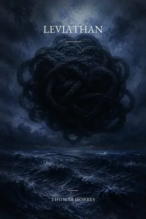<span class="row-text"><span class="row-title">Leviathan</span><span class="row-meta">Thomas Hobbes · 14 h</span><span class="row-src">Modern English, from the original English</span></span></a></li><li class="row" data-q="the us founding documents jefferson, madison, adams, et al."><a href="https://tinct.app/read/us-founding-documents?ref=modern-english"><span class="row-text"><span class="row-title">The US Founding Documents</span><span class="row-meta">Jefferson, Madison, Adams, et al. · 2 h</span><span class="row-src">Modern English, from the original English</span></span></a></li><li class="row" data-q="the wealth of nations adam smith"><a href="https://tinct.app/read/wealth-of-nations?ref=modern-english"><span class="row-text"><span class="row-title">The Wealth of Nations</span><span class="row-meta">Adam Smith · 25 h</span><span class="row-src">Modern English, from the original English</span></span></a></li><li class="row" data-q="the federalist papers hamilton, madison, jay"><a href="https://tinct.app/read/federalist-papers?ref=modern-english"><span class="row-text"><span class="row-title">The Federalist Papers</span><span class="row-meta">Hamilton, Madison, Jay · 13 h</span><span class="row-src">Modern English, from the original English</span></span></a></li><li class="row" data-q="a vindication of the rights of woman mary wollstonecraft"><a href="https://tinct.app/read/vindication-rights-of-woman?ref=modern-english"><span class="row-text"><span class="row-title">A Vindication of the Rights of Woman</span><span class="row-meta">Mary Wollstonecraft · 6 h</span><span class="row-src">Modern English, from the original English</span></span></a></li><li class="row" data-q="democracy in america alexis de tocqueville"><a href="https://tinct.app/read/democracy-in-america?ref=modern-english">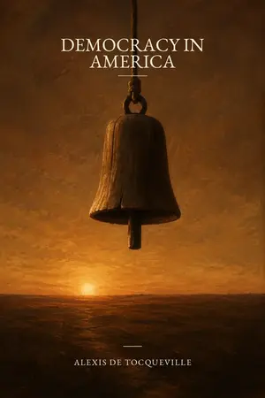<span class="row-text"><span class="row-title">Democracy in America</span><span class="row-meta">Alexis de Tocqueville · 18 h</span><span class="row-src">Modern English, from Henry Reeve, revised by Francis Bowen’s 1862 translation</span></span></a></li><li class="row" data-q="narrative of the life of frederick douglass frederick douglass"><a href="https://tinct.app/read/frederick-douglass?ref=modern-english"><span class="row-text"><span class="row-title">Narrative of the Life of Frederick Douglass</span><span class="row-meta">Frederick Douglass · 3 h</span><span class="row-src">Modern English, from the original English</span></span></a></li><li class="row" data-q="the communist manifesto karl marx &amp; friedrich engels"><a href="https://tinct.app/read/communist-manifesto?ref=modern-english"><span class="row-text"><span class="row-title">The Communist Manifesto</span><span class="row-meta">Karl Marx &amp; Friedrich Engels · 52 min</span><span class="row-src">Modern English, from Samuel Moore (edited by Engels)’s 1888 translation</span></span></a></li><li class="row" data-q="on liberty john stuart mill"><a href="https://tinct.app/read/on-liberty?ref=modern-english"><span class="row-text"><span class="row-title">On Liberty</span><span class="row-meta">John Stuart Mill · 3 h</span><span class="row-src">Modern English, from the original English</span></span></a></li></ul></section><section class="house" data-house><h3>History <span class="count">2</span></h3><ul class="rows"><li class="row" data-q="the histories herodotus"><a href="https://tinct.app/read/the-histories?ref=modern-english"><span class="row-text"><span class="row-title">The Histories</span><span class="row-meta">Herodotus · 20 h</span><span class="row-src">Modern English, from George Campbell Macaulay’s 1890 translation</span></span></a></li><li class="row" data-q="history of the peloponnesian war thucydides"><a href="https://tinct.app/read/peloponnesian-war?ref=modern-english">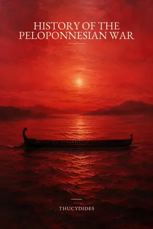<span class="row-text"><span class="row-title">History of the Peloponnesian War</span><span class="row-meta">Thucydides · 11 h</span><span class="row-src">Modern English, from Richard Crawley’s 1874 translation</span></span></a></li></ul></section><section class="house" data-house><h3>War and strategy <span class="count">1</span></h3><ul class="rows"><li class="row" data-q="the art of war sun tzu"><a href="https://tinct.app/read/the-art-of-war?ref=modern-english"><span class="row-text"><span class="row-title">The Art of War</span><span class="row-meta">Sun Tzu · 57 min</span><span class="row-src">Modern English, from E. F. Calthrop’s 1908 translation</span></span></a></li></ul></section></div>
  <p class="empty" id="empty" hidden>No book matches that. Try an author’s name.</p>
</div>

<div class="wrap block">
  <h2>How these editions are made</h2>
  <ul class="how">
    <li><strong>Made with AI,</strong> page by page, from the original text or from the older translation named on each book. It is a reading aid, not a scholarly translation.</li>
    <li><strong>The original stays with you.</strong> One tap switches back to it at the same line, so you can always check a passage.</li>
    <li><strong>Free to read, no account needed.</strong> Highlight any passage to have it explained, simplified, or to ask about it.</li>
  </ul>
  <div class="close"><p>No text is beyond you.</p><a href="https://tinct.app/try">See how Tinct works</a></div>
</div>
</main>

<footer><div class="wrap"><span>Tinct</span><a href="https://tinct.app/privacy">Privacy</a><a href="https://tinct.app/terms">Terms</a><a href="https://tinct.app/credits">Credits</a></div></footer>

<script>
(function () {
  var q = document.getElementById('q');
  var rows = Array.prototype.slice.call(document.querySelectorAll('.row'));
  var houses = Array.prototype.slice.call(document.querySelectorAll('[data-house]'));
  var empty = document.getElementById('empty');
  q.addEventListener('input', function () {
    var t = q.value.trim().toLowerCase();
    var shown = 0;
    rows.forEach(function (r) { var on = !t || r.getAttribute('data-q').indexOf(t) >= 0; r.hidden = !on; if (on) shown++; });
    houses.forEach(function (h) { h.hidden = !h.querySelector('.row:not([hidden])'); });
    empty.hidden = shown > 0;
    if (t && shown) document.getElementById('all').scrollIntoView({ block: 'start', behavior: 'smooth' });
  });
})();
</script>
